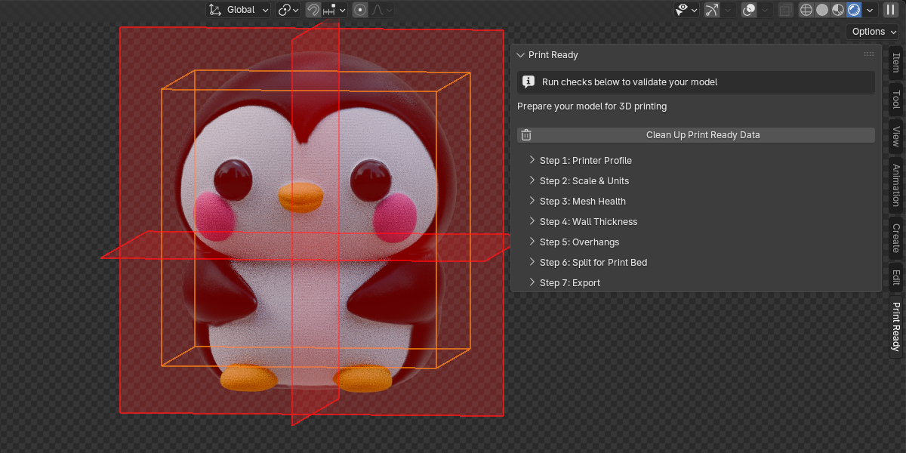
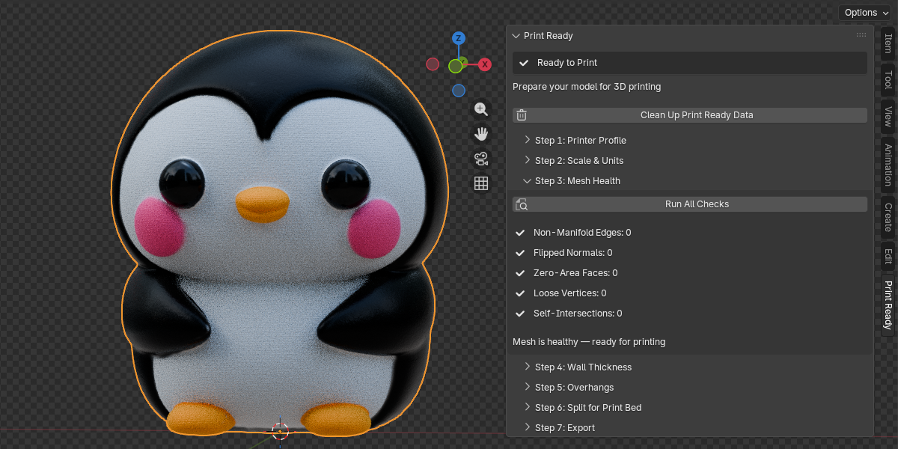
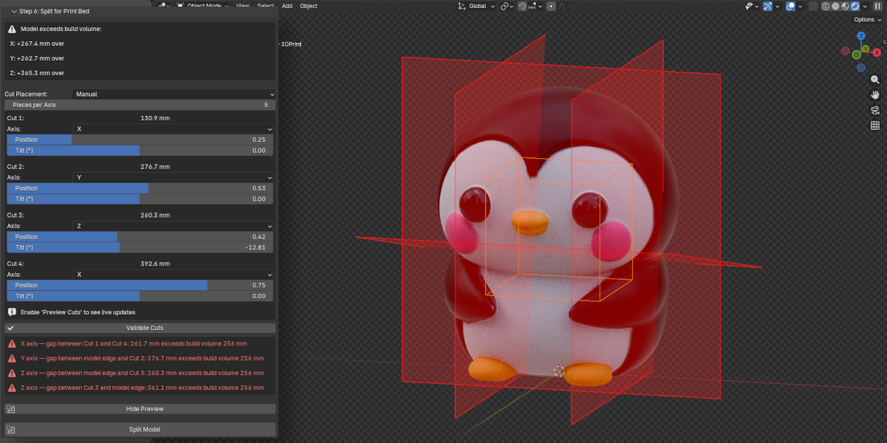

3DQuads Print Ready
Documentation
Complete reference for every feature, operator, parameter, and workflow in the extension.
1 Overview
3DQuads Print Ready is a Blender extension that adds a complete 3D print preparation pipeline directly inside the 3D Viewport's N-panel. Instead of switching between external tools or running manual checks, the extension walks you through seven guided steps — from selecting a printer to exporting a print-ready file — without ever leaving Blender.
Requirements
- Blender 4.5 or newer (Extension system required)
- No external Python packages — only built-in Blender APIs (
bpy,bmesh,mathutils) - GPL-3.0-or-later license
Where to find it
Once installed, the extension lives in the N-panel of the 3D Viewport under the tab named Print Ready. Press N inside the 3D Viewport to open the panel, then click the Print Ready tab.

2 Features
3 Installation
- Download the
print_ready-1.0.0.zipfile. - Open Blender 4.5 or newer.
- Go to Edit → Preferences → Extensions.
- Click Install from Disk (top-right dropdown) and select the ZIP file.
- The extension will appear in the list. Ensure the toggle is enabled.
- Open the 3D Viewport, press N, and click the Print Ready tab.
4 Quick Start
Get a model ready for printing in five steps:
- Select the mesh object you want to prepare.
- In the
Print Readytab → Step 1: pick your printer from the preset dropdown. All fields auto-fill. - Step 2: click Validate Scale. If warnings appear, click Fix Scale to Millimeters.
- Step 3: click Run All Checks. If issues are found, click Fix All Issues.
- Step 7: set an export directory, then click Export for Printing.
5 Usage Guide
Each step in the N-panel is a collapsible sub-panel. They work independently — you can run any step at any time, though the recommended order maximises accuracy.
Step 1 — Printer Profile
Select your printer to automatically fill all dimensional parameters used by subsequent steps.
Built-in presets (13)
- FDM: Bambu Lab P1S, X1 Carbon, A1 · Prusa MK4S, Mini+ · Creality Ender 3 V3, K1 Max · Anycubic Kobra 3 · Artillery Sidewinder X4 Plus · Voron 2.4 350mm
- Resin: Elegoo Mars 4 Ultra, Saturn 4 Ultra
- Custom: all fields are left editable — enter your own values manually
Selecting a preset auto-fills: Printer Type, Build Volume (X/Y/Z), Nozzle Diameter, Min Wall Thickness, Layer Height, and — importantly — the Thickness Threshold used in Step 4.
Step 2 — Scale & Units
Ensures the Blender scene and the object's transform are configured correctly for real-world millimetre output.
Validate Scale
Checks three conditions simultaneously:
- Scene unit system is Metric
- Scene
unit_scaleis0.001(so 1 Blender Unit = 1 mm) - The active object has no unapplied scale (all axes = 1.0)
Fix Scale to Millimeters
Corrects all three conditions in a single click: sets Metric, sets scale_length = 0.001, applies the object's scale transform. Supports undo.
Target Unit
Controls how the object dimensions are displayed in the panel. Internally everything stays in Blender Units (= mm). Options: Millimeters, Centimeters, Inches.
Build volume fit
After validation, the panel shows the object's dimensions alongside the printer's build volume. If the model overflows an axis, a warning indicates which axis to address — either by scaling the model or by splitting it in Step 6.
Step 3 — Mesh Health
Runs five targeted mesh checks that are the most common causes of slicer failures and print defects.

The five checks
| Check | What it detects | Auto-fixable? |
|---|---|---|
| Non-Manifold Edges | Edges connected to more or fewer than 2 faces (holes, internal faces, T-junctions) | Yes |
| Flipped Normals | Faces whose normals are inconsistent with their neighbours (dot product < −0.5) | Yes |
| Zero-Area Faces | Degenerate faces with area < 1×10⁻⁸ (collapsed triangles/quads) | Yes |
| Loose Vertices | Vertices not connected to any edge | Yes |
| Self-Intersections | Face pairs that geometrically penetrate each other (BVHTree overlap) | No |
Fix order (Fix All)
When Fix All Issues is used, repairs run in this order to avoid cascade failures:
- Delete loose vertices
- Delete zero-area faces
- Recalculate face normals outward
- Dissolve degenerate edges + fill boundary holes
Step 4 — Wall Thickness
Identifies areas of the mesh that are thinner than the printer's minimum printable wall thickness. Thin walls either fail to print entirely or collapse during printing.
How the analysis works
For each face, a ray is cast from the face's centre point in the direction of the inverted face normal (i.e., inward through the mesh). The distance to the first opposing surface it hits is recorded as the local wall thickness at that face.
Thickness Threshold
The minimum acceptable wall thickness in mm. Auto-populated from the printer preset's Min Wall Thickness value. Adjust manually for your specific filament or print settings.
Results
- Number of faces below the threshold
- Minimum thickness found (thinnest wall in the mesh)
- Maximum thickness found
Thickness Overlay
Applies a vertex colour attribute (PrintReady_Thickness) to the mesh and enables it in the viewport. Requires Solid shading with Color: Attribute enabled in Viewport Shading options.
Select Thin Faces
Enters Edit Mode and selects all faces whose measured thickness is below the threshold. Use this to manually thicken those areas with the Solidify modifier, Shrink/Fatten (Alt+S), or manual modelling.
Step 5 — Overhang Detection
Identifies faces that overhang at an angle steeper than the printer can bridge without support material. FDM printers typically handle up to 45–50°; resin printers vary more widely.
Overhang Angle
The threshold angle in degrees (0–90, default 45). Faces whose outward normal points more than this angle below horizontal are classified as overhangs. A value of 45° means any face steeper than 45° from the horizontal plane requires supports.
Overhang Overlay
Applies a PrintReady_Overhang vertex colour attribute. Requires Solid shading with Color: Attribute.
Suggest Best Orientation
Tests six candidate rotations of the object and reports which one produces the fewest overhang faces, along with the percentage improvement over the current orientation:
Rotations tested (degrees):
Current (0, 0, 0)
Rotate X +90 → front face down
Rotate X −90 → back face down
Rotate Y +90 → right face down
Rotate Y −90 → left face down
Rotate Z +90 → side orientationStep 6 — Model Splitter
Splits a model that is too large for the printer's build volume into multiple pieces. Each piece has flat, capped faces at the cut plane so the parts can be glued or fastened together after printing.

Split Mode
The primary choice that determines how cuts are defined:
- AUTO (default) — automatically detects which axes overflow the build volume and calculates the minimum cuts needed. Choose a split axis (X / Y / Z / Auto) and a piece count.
- MANUAL — define each cut independently. For every cut you set its axis (X, Y, or Z), its position along the object, and an optional tilt angle. This lets you mix axes freely — e.g. one cut on X and another on Z.
AUTO Mode
Select Split Axis (X / Y / Z, or Auto to detect automatically) and Pieces (2–10). The extension calculates evenly-spaced cuts along each overflowing axis.
MANUAL Mode
Set Pieces to control how many cut controls appear (n pieces = n−1 cuts). For each cut:
- Axis — which world axis this specific cut is perpendicular to (X, Y, or Z)
- Position — slider from 0% to 100% of the object's extent along the chosen axis, with a live millimetre readout
- Tilt (°) — tilts the cut plane up to ±85° away from perpendicular
Increasing the piece count only resets newly-added cut slots — existing configurations are preserved.
Validate Cuts
Available in MANUAL mode. Checks that every piece produced by the current cut settings fits within the build volume. Cuts on different axes are validated independently per axis — a cut on X does not constrain Y or Z spans.
If any span exceeds the build volume, a red error box appears in the panel identifying the exact gap (e.g. "X axis — gap between Cut 2 and Cut 3: 245.0 mm exceeds build volume 220 mm"). Fix the offending slider and click Validate again.
Preview Cuts
Toggles a GPU viewport overlay showing the build volume (orange wireframe) and cut planes (red translucent quads) directly in the 3D viewport. No objects are created in the Outliner. The overlay updates live as you move position or tilt sliders — no re-click required. Click the button again to hide the overlay.
Split Model
Triggers a confirmation dialog, then:
- Creates copies of the original mesh, one per piece
- Bisects each copy using
bmesh.ops.bisect_plane - Fills the open cut edges using
edgeloop_fill(falls back totriangle_fillfor complex shapes) - Removes duplicate vertices and recalculates normals
- Places all parts in a "Print Ready Parts" collection
- Hides the original object (preserved for Undo Split)
Undo Split
Removes all objects from "Print Ready Parts", deletes the collection, and restores the original object's visibility.
— Interlocking connectors or alignment pins are not generated (planned for v2).
— Very thin geometry at the cut plane may produce open edges after bisection. If this happens, run Fix Non-Manifold on the affected part.
— Complex meshes with internal structures may require manual inspection after splitting.
Step 7 — Export
Exports the prepared model (or split parts) to a slicer-ready file format.
Formats
| Format | Best for | Notes |
|---|---|---|
| STL | General compatibility | Universally supported by all slicers. Binary output. Most widely used. |
| 3MF | Modern slicers | Preserves more metadata. Smaller file size. Supported by PrusaSlicer, BambuStudio, Orca. |
| OBJ | Broad compatibility | Supported by most 3D tools. Larger file size than STL for print use. |
Export Directory
The folder where files will be saved. If left empty and the .blend file is saved, the directory defaults to the same folder as the .blend file.
Apply Modifiers
When enabled (default), all modifiers on the mesh are baked into the exported geometry. Disable only if you want to export the base mesh without modifier effects.
File Name Prefix
Text prepended to every exported file name. Default: print_. Example output: print_MyObject.stl.
Export for Printing
Smart export: if the model has been split, exports every object in the "Print Ready Parts" collection as a separate file. Otherwise exports the active mesh object.
Quick Export (STL)
One-click export as STL to the same folder as the .blend file. The button is greyed out if the .blend file has not been saved yet.
Scale correction
The exporter applies a scale factor of unit_scale × 1000. With the recommended scene setup (unit_scale = 0.001), this results in a scale factor of 1.0 — the file is exported at true millimetre size without any re-scaling.
6 Operators
All 23 operators are listed below with their Python identifiers, descriptions, and activation requirements. All operators require an active mesh object unless noted as "—".
| Operator | ID | Description | Prerequisites |
|---|---|---|---|
| Validate Scale | printready.validate_scale |
Check scene unit system, unit_scale, and object transform for print compatibility. | Active mesh |
| Fix Scale to Millimeters | printready.fix_scale |
Set scene to Metric + unit_scale 0.001, apply object scale. Supports undo. | Active mesh |
| Run All Checks | printready.run_health_checks |
Run all five mesh health checks in a single bmesh session. Stores counts in scene properties. | Active mesh |
| Fix Non-Manifold | printready.fix_non_manifold |
Dissolve degenerate edges + attempt to fill boundary holes (up to 4 sides). Re-runs health check on completion. | Active mesh |
| Fix Normals | printready.fix_normals |
Recalculate all face normals outward-facing. Re-runs health check on completion. | Active mesh |
| Fix Zero Faces | printready.fix_zero_faces |
Delete faces with area < 1×10⁻⁸. Re-runs health check on completion. | Active mesh |
| Fix Loose Vertices | printready.fix_loose_verts |
Delete vertices with no connected edges. Re-runs health check on completion. | Active mesh |
| Fix All Issues | printready.fix_all_issues |
Runs all four fixable repairs in the recommended order (loose verts → zero faces → normals → non-manifold). Supports undo. | Active mesh; no shape keys; single-user mesh data |
| Analyze Thickness | printready.analyze_thickness |
BVHTree ray-cast from each face centre along −normal to measure local wall thickness. | Active mesh |
| Toggle Thickness Overlay | printready.toggle_thickness_overlay |
Show or hide the red/yellow/green thickness heatmap vertex colour attribute. | Thickness analysis must have been run |
| Select Thin Faces | printready.select_thin_faces |
Enter Edit Mode and select all faces below the thickness threshold. | Active mesh |
| Detect Overhangs | printready.detect_overhangs |
Classify faces as overhanging based on world-space normal angle vs the overhang threshold. | Active mesh |
| Toggle Overhang Overlay | printready.toggle_overhang_overlay |
Show or hide the green/yellow/red/blue overhang heatmap vertex colour attribute. | Overhang detection must have been run |
| Select Overhang Faces | printready.select_overhangs |
Enter Edit Mode and select all overhang faces. | Active mesh |
| Suggest Best Orientation | printready.suggest_orientation |
Test six candidate rotations and report the one that minimises overhang face count. | Active mesh |
| Toggle Build Volume | printready.toggle_build_volume |
Toggle the GPU viewport overlay showing the printer's build volume and cut planes. Also callable via the Preview Cuts button. | Active mesh |
| Preview Cuts | printready.preview_cuts |
Toggle the GPU viewport overlay showing the build volume (orange wireframe) and cut planes (red quads) in real time. Updates live as cut settings change. | Active mesh |
| Validate Cuts | printready.validate_cuts |
Check that every piece produced by the current manual cut settings fits within the build volume. Reports the exact gap and cuts involved for any violation. | Active mesh; Manual mode |
| Split Model | printready.split_model |
Bisect model into pieces using bisect_plane + fill. Requires confirmation. Supports undo. | Active mesh (confirmation dialog shown) |
| Undo Split | printready.undo_split |
Delete all parts in "Print Ready Parts" collection and restore the original hidden object. | Model must currently be split |
| Export for Printing | printready.export |
Export active object or all split parts to the configured format and directory. | Active mesh; export path set (or .blend file saved) |
| Quick Export (STL) | printready.quick_export |
Export as STL to the same directory as the current .blend file. | Active mesh; .blend file must be saved |
| Clean Up Print Ready Data | printready.cleanup |
Remove thickness and overhang vertex colour attributes and reset all overlay flags. Supports undo. | — |
7 Parameters
All parameters are stored on scene.print_ready (a PrintReadySettings PropertyGroup). Values persist per-scene for the lifetime of the .blend file.
Printer Profile
| Property | Type | Default | Range | Description |
|---|---|---|---|---|
| printer_preset | Enum | (first preset) | 13 options + Custom | Select a printer; triggers auto-fill of all profile fields |
| printer_type | Enum | FDM | FDM / RESIN | Printer technology; affects min wall thickness recommendations |
| build_volume_x | Float (mm) | 256.0 | 1.0 – 2000.0 | Printer build area width |
| build_volume_y | Float (mm) | 256.0 | 1.0 – 2000.0 | Printer build area depth |
| build_volume_z | Float (mm) | 256.0 | 1.0 – 2000.0 | Printer build area height |
| nozzle_diameter | Float (mm) | 0.4 | 0.1 – 2.0 | FDM nozzle diameter; informational reference |
| min_wall_thickness | Float (mm) | 0.8 | 0.1 – 10.0 | Minimum printable wall for this printer; seeds thickness_threshold |
| layer_height | Float (mm) | 0.2 | 0.01 – 1.0 | Default layer height; informational reference |
Scale & Units
| Property | Type | Default | Options | Description |
|---|---|---|---|---|
| target_unit | Enum | MILLIMETERS | MILLIMETERS / CENTIMETERS / INCHES | Unit for displaying object dimensions in the panel |
Wall Thickness
| Property | Type | Default | Range | Description |
|---|---|---|---|---|
| thickness_threshold | Float (mm) | 0.8 | 0.01 – 10.0 | Minimum acceptable wall thickness; auto-set from preset's min_wall_thickness |
Overhang
| Property | Type | Default | Range | Description |
|---|---|---|---|---|
| overhang_angle | Float (degrees) | 45.0 | 0.0 – 90.0 | Threshold angle from horizontal; faces steeper than this value are flagged as overhangs |
Model Splitter
| Property | Type | Default | Range / Options | Description |
|---|---|---|---|---|
| split_mode | Enum | AUTO | AUTO / MANUAL | Whether cuts are calculated automatically or set manually per-cut |
| split_axis | Enum | AUTO | X / Y / Z / AUTO | Axis to split along (AUTO mode only); AUTO detects overflowing axes automatically |
| split_count | Int | 2 | 2 – 10 | Number of pieces; in MANUAL mode, determines how many cut controls appear |
| cut_axis_1–9 | Enum | X | X / Y / Z | Per-cut axis (MANUAL mode); each cut can use a different axis |
| cut_pos_1–9 | Float | varies | 0.01 – 0.99 | Per-cut position as a fraction of the object's extent along that cut's axis |
| cut_rot_1–9 | Float | 0.0 | −85.0 – 85.0 | Per-cut tilt angle in degrees; tilts the cut plane away from perpendicular |
Export
| Property | Type | Default | Options | Description |
|---|---|---|---|---|
| export_format | Enum | STL | STL / 3MF / OBJ | Output file format |
| export_path | String (dir) | "" | Any directory path | Destination folder; defaults to .blend file directory if empty |
| export_apply_modifiers | Bool | True | — | Bake all modifiers into exported geometry |
| export_name_prefix | String | "print_" | Any string | Prefix for exported file names (e.g. print_MyObject.stl) |
8 Workflow
The recommended end-to-end workflow for preparing a model for printing. Steps 4–6 are optional depending on your print requirements.
9 Troubleshooting
| Symptom | Cause | Solution |
|---|---|---|
| "Mesh has multiple users" | The mesh data-block is shared between multiple objects (linked copies) | Select the object → press U in the Properties panel → Make Single User → Object & Data, then retry. |
| "Cannot change topology on mesh with shape keys" | Shape keys are present; topology-changing operations would corrupt them | Delete shape keys in Properties → Object Data → Shape Keys, or bake them to the basis shape first. |
| Thickness overlay not visible after toggle | Vertex colour attributes are not displayed in the current shading mode | Switch viewport shading to Solid, then in the Viewport Shading popover (top-right sphere icon) set Color → Attribute. Also ensure analysis has been run first. |
| Overhang overlay not visible after toggle | Same as thickness overlay — shading mode or analysis not run | Run Detect Overhangs first, then enable Solid shading with Color: Attribute. |
| Quick Export (STL) is greyed out | The .blend file has not been saved yet | Save the file (Ctrl+S) and the button will become active. Alternatively, use the full Export panel and set a directory manually. |
| Export fails: "Set an export directory or save the .blend file first" | No export path is configured and no .blend file path is available | Either save the .blend file, or expand Step 7 and type a path into the Export Directory field. |
| Self-intersections remain after Fix All | Auto-fix for self-intersections is not implemented | Fix manually: add a Boolean → Union modifier (Object mode) to merge intersecting regions, or use sculpt tools. Then re-run health checks. |
| Split produces open edges on a piece | Very thin or degenerate geometry at the cut plane cannot be filled cleanly | Run Fix Non-Manifold on the affected part. If the problem persists, move the cut position slightly by adjusting build volume size or model placement before splitting. |
| Model appears 1000× too large or too small in slicer | Scene units were not correct at export time | Run Fix Scale to Millimeters (Step 2), then re-export. Verify: 1 Blender Unit should equal 1 mm in scene settings. |
| Build volume preview does not match expected printer size | Build volume values in the printer profile do not match | In Step 1, re-select the correct printer preset or manually correct Build Volume X/Y/Z. Then re-toggle the preview. |
| Thickness analysis warns about mesh health issues | Non-manifold geometry or self-intersections affect ray-cast accuracy | Complete Step 3 (Mesh Health) first to resolve non-manifold edges before running thickness analysis. |
10 FAQ
blender_manifest.toml file and extension API are not available in older versions. Minimum requirement: Blender 4.5.11 Technical Details
Architecture
The extension is structured as a standard Blender 4.5+ Extension package with a blender_manifest.toml configuration file. All code is pure Python — no external packages, no compiled extensions.
print_ready/
blender_manifest.toml ← Extension manifest
__init__.py ← Entry point (register/unregister)
core/
printer_profiles.py ← JSON preset loader
scale_validator.py ← Unit and transform checks
mesh_health.py ← bmesh analysis and repair
wall_thickness.py ← BVHTree ray-cast analysis
overhang_detector.py ← Face normal angle analysis
model_splitter.py ← Bisect-based splitting
exporter.py ← STL/3MF/OBJ export
ui/
properties.py ← PrintReadySettings PropertyGroup
operators.py ← 23 operators
panels.py ← 8 N-panel sub-panels
data/
printer_presets.json ← 13 printer preset definitionsUnit convention
The extension assumes and enforces the convention that 1 Blender Unit = 1 millimetre, achieved by setting the scene's unit_scale = 0.001. All internal mm calculations use:
mm = obj.dimensions[axis] * scene.unit_scale * 1000The export scale factor is unit_scale × 1000.0 = 1.0, meaning files are exported at true millimetre scale with no rescaling needed.
Mesh operations
All mesh analysis and repair uses Blender's bmesh module. Every bmesh session is wrapped in a try/finally: bm.free() block to prevent memory leaks. The extension never leaves a bmesh instance open on error.
Wall thickness algorithm
For each face in the mesh:
- The face's world-space centre point and inverted normal direction are computed
- A ray is cast from that point in the
-normaldirection usingBVHTree.ray_cast() - The distance to the first hit is recorded as the local wall thickness
- Faces with no hit (boundary faces, outer shells) receive a thickness of 0
Self-intersection detection
Uses BVHTree.overlap(tree) to find all intersecting face pairs, then filters out:
- Self-pairs
(a == b) - Duplicate pairs
(a > b) - Adjacent face pairs (faces sharing an edge) — these overlap by design at their shared boundary
Overhang algorithm
For each face, the world-space normal is compared to the downward direction (0, 0, -1) using a dot product. The angle from horizontal is derived from the dot product result. Faces where this angle exceeds the threshold are classified as overhangs.
Model splitting algorithm
Each cut uses the following sequence:
bmesh.ops.bisect_plane— cuts the mesh at the specified planebmesh.ops.edgeloop_fill— fills the open edge loop created by the cut (fallback:triangle_fillfor complex loops)bmesh.ops.remove_doubles— merges any duplicate vertices at the cutbmesh.ops.recalc_face_normals— ensures outward-facing normals on the new cap face
Vertex colour attributes
- Name:
PrintReady_ThicknessandPrintReady_Overhang - Type:
FLOAT_COLOR, domain:CORNER(per-face-corner storage) - Removable via Properties → Object Data → Color Attributes, or via the Clean Up operator
Viewport overlay (GPU draw handler)
Build volume and cut plane previews are rendered using a SpaceView3D GPU draw callback registered via draw_handler_add. The callback runs on every viewport redraw, reads live settings from scene.print_ready, and draws using gpu.shader.from_builtin('UNIFORM_COLOR') and batch_for_shader(). No scene objects are created. The handler is registered by enable_overlay() and removed by disable_overlay() in model_splitter.py.
A bpy.app.handlers.load_post handler in __init__.py resets split_show_preview = False and calls disable_overlay() on file load, preventing stale overlay state after reopening a .blend file.
- Print Ready Parts — collection holding post-split mesh objects
Properties location
All settings are stored on the Blender Scene object:
bpy.context.scene.print_ready # → PrintReadySettingsThey persist per-scene within the .blend file. Opening a new file resets all values to defaults.